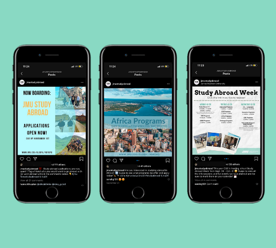

CGE Promotional Design
The Task
As a designer and Global Ambassador for my University’s Study Abroad program, I design all promotional materials for overall marketing strategies and campaigns, as well as design images for web, social media, and other mediums for exposure.
The on-going pandemic forced the University to cancel all Study Abroad programs for the summer of 2020. This cut into funding for the Center for Global Engagement and jeopardized the community’s trust of the validity of upcoming programs. Promoting the opportunity to study abroad during a time of global travel-restrictions has definitely been challenging, but has taught me that being flexible and optimistic can result in a great final product. Some pieces from my most recent project are showcased below!
The Branding
I begin each new project by creating a branding guideline to ensure cohesiveness. The fall 2020 brand guideline for JMU’s Study Abroad Week, designed by me, is shown below.
Typefaces were chosen for their readability and usability. It was dire that fonts be easily readable in multiple formats spanning from digital to print.
Designs For Print
Below is the 2020 Study Abroad Week brochure designed by me with Adobe InDesign. Names of presenters are marked out for privacy.
The brochure offers a tentative schedule of events and follows the 2020 brand guidelines. Prior to remote learning, I along with other Global Ambassadors would frequently attend classes to present a short overview of everything Study Abroad Week had to offer. Since this was the first year where in-person presentations were not allowed (thanks, Covid-19), the primary aim of the brochure was to provide students with a physical copy of the schedule in hopes of acting as a reminder for upcoming events.
Designs For Social Media

The importance of keeping an active social media presence on the study abroad Instagram was heightened this year because of social distancing.
A few social media posts I desgined for the account are shown below. The account has a following of over 2,000 users.
Designs For Videography
I also assist in the design process for motion picture components. I assisted in the graphic design elements of the video seen below + ensured the video followed the 2020 branding guidelines.